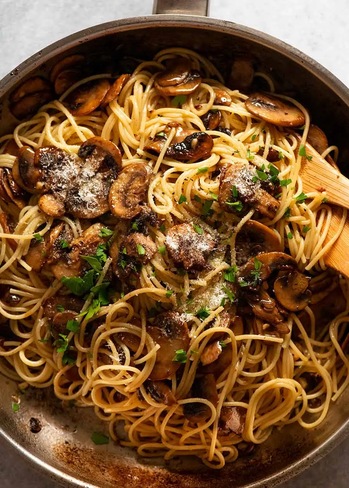

ODIN Mushroom Pasta

Easy as 1, 2, 3!
Ingredients
- 160g/6 oz long pasta - spaghetti, fettucine
- 400g / 14 oz mushrooms
- 50g / 3 tbsp unsalted butter
- 1 tablespoons olive oil
- Pinch of salt and pepper
- 1/2 cup freshly grated parmesan cheese
- Parsley, finely chopped
Steps
- Bring a large pot of salted water to the boil. Add the pasta into the pot when you start cooking the mushrooms.
- Cook pasta per packet instructions minus 1 minute. RESERVE 1 mugful of pasta cooking liquid, then drain pasta.
- Melt half butter and all oil in a large skillet over heat.
- Add mushrooms and cook until water has leeched then evaporated, and the mushrooms start to turn golden around edges - around 5 minutes.
- Halfway through cooking, add salt & pepper.
- Add garlic and remaining butter, cook for 2 minutes until mushrooms and garlic are golden.
- Add pasta, about 3/4 cup of reserved pasta water and parmesan. Toss gently or until water reduces and thickens into a saucy glaze that coats the pasta.
If the pasta dries out, add more pasta water.
- Taste and add more salt and pepper if needed.
- Remove from stove and serve immediately, garnished with fresh parsley and parmesan cheese.